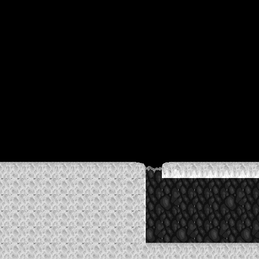
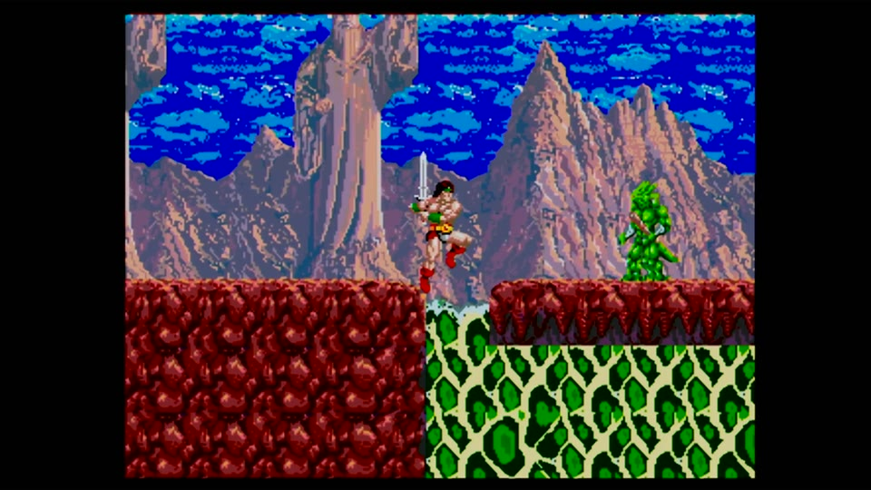

Expected semantic source. This is a complete map rendering, not a synchronized actor frame.

The cave-wall tile geometry is right, but Plane A renders it with the wrong green/cream palette. Color is not tile-identity evidence.
Independent static defect
Expected descriptor entry
strip_src_table[row_segment] + segment_index*0x40 + source_group*4
Build 0311 entry
strip_src_table[row_segment] + source_group*4
The omitted term is the live semantic segment index at Genesis-WRAM 0xFF013E. Build 0312 restores it before direct Plane-A staging. This arithmetic defect is proven from source, but the MP4 does not prove it caused the visible green cave walls. The palette/attribute mismatch remains separately open; exact numeric scroll coordinates and per-cell runtime codes remain unclaimed because the MP4 was not synchronized to a WRAM trace.